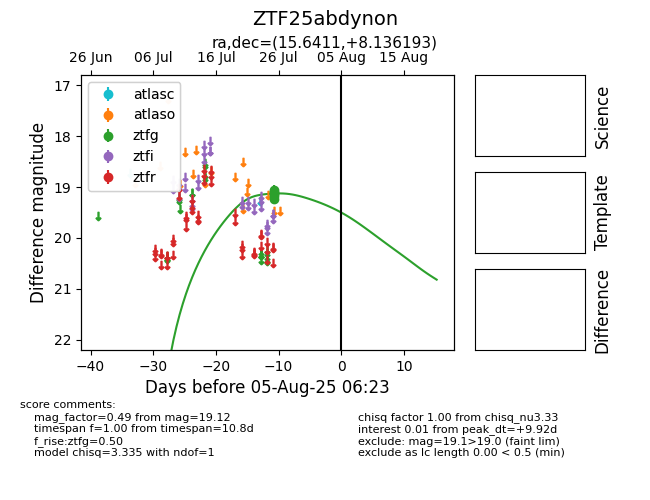

Target ZTF25abdynon at 2025-08-05 07:33, see:
FINK: fink-portal.org/ZTF25abdynon
Lasair: lasair-ztf.lsst.ac.uk/objects/ZTF25abdynon
ALeRCE: alerce.online/object/ZTF25abdynon
alt names
ZTF25abdynon (ztf,fink)
coordinates:
equatorial (ra, dec) = (15.6411,+8.13619)
galactic (l, b) = (127.6928,-54.63267)
photometry
last ztfg=19.12
5 ztfg detections
